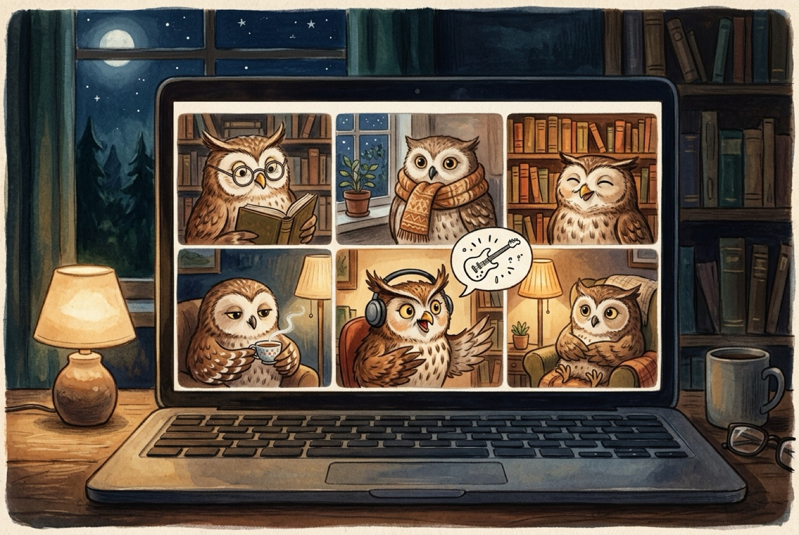
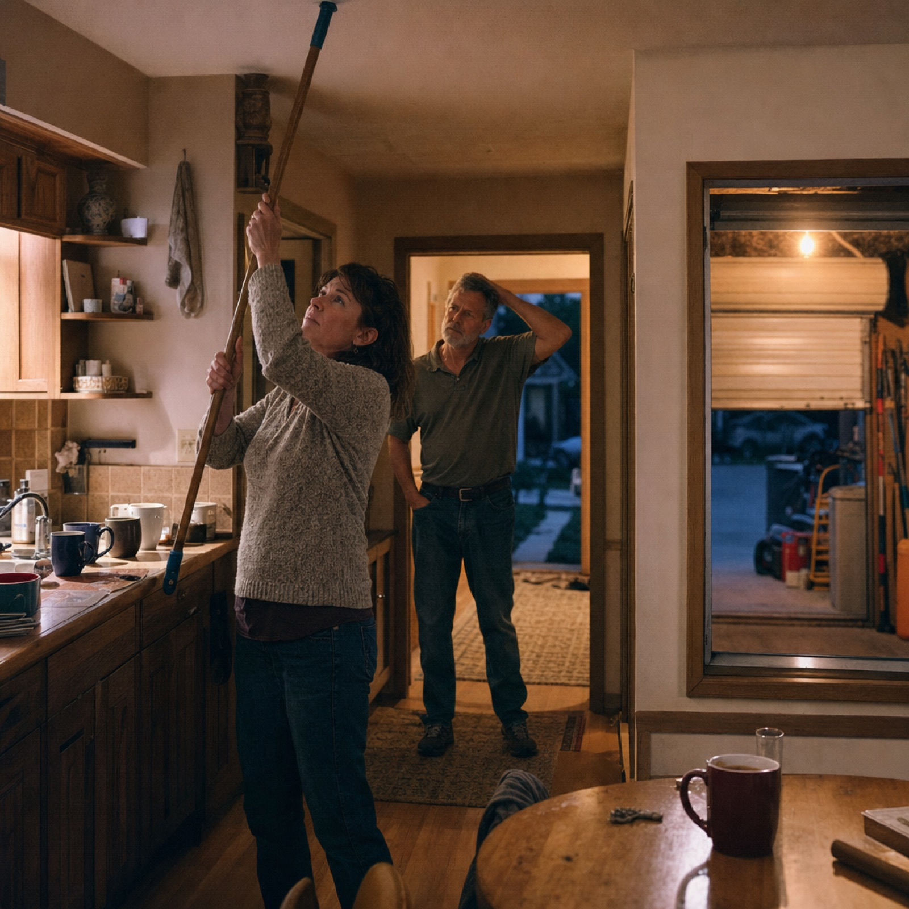
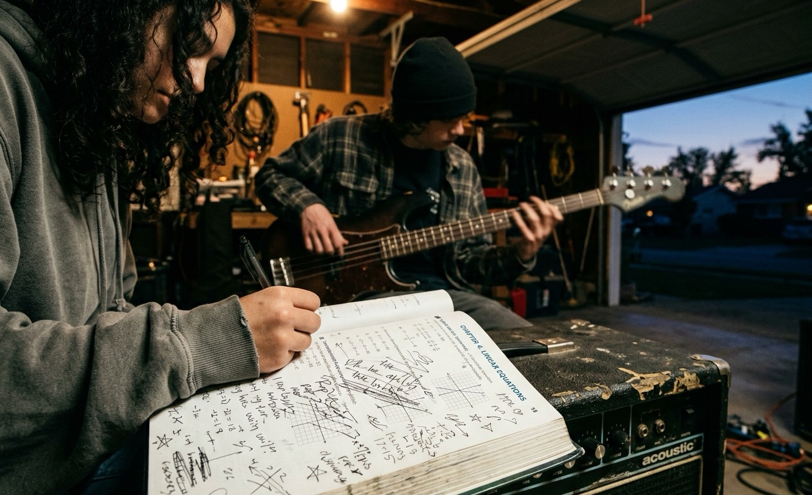
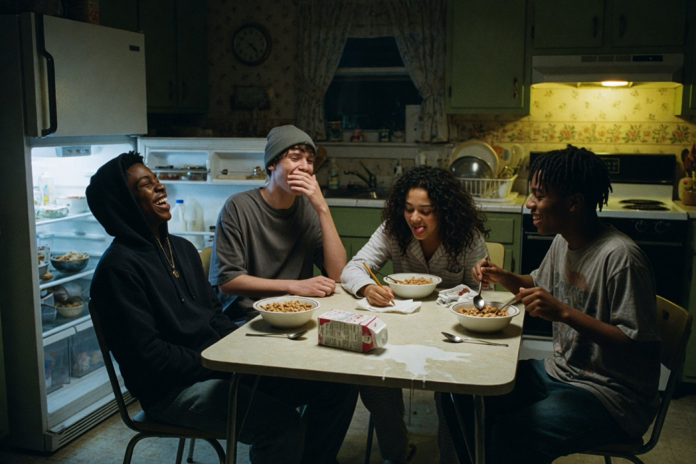
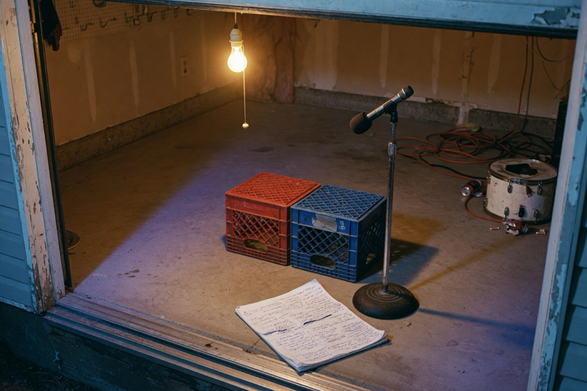
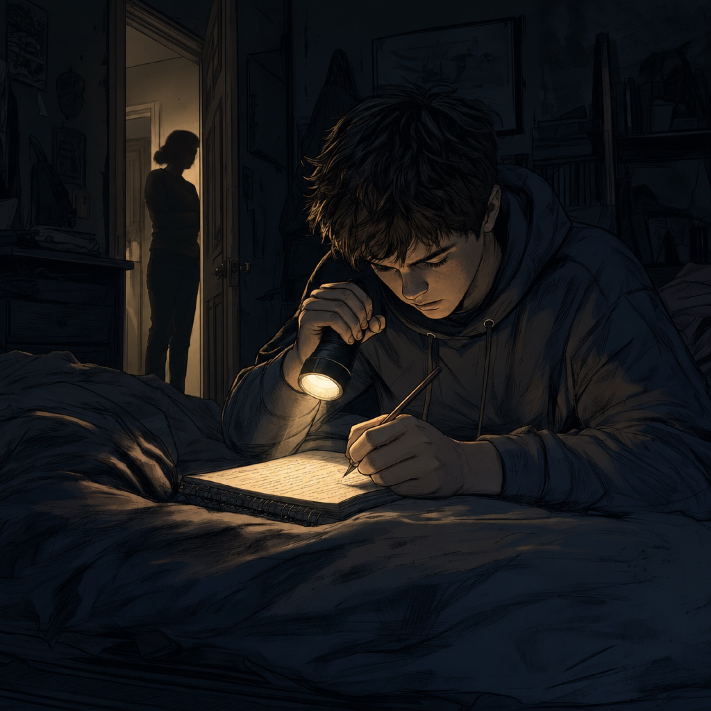
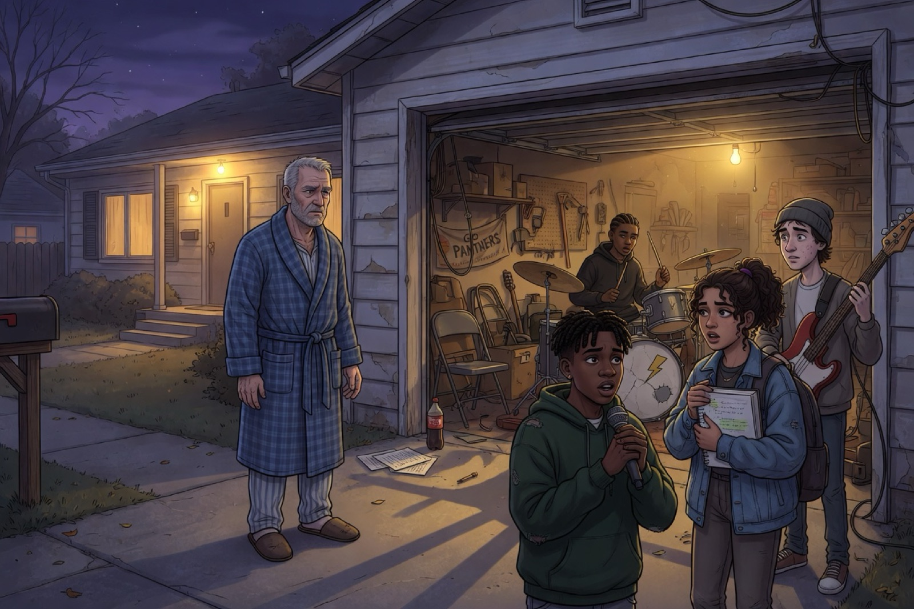
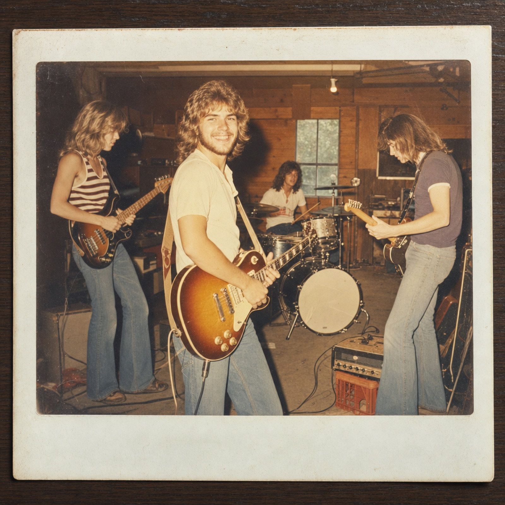
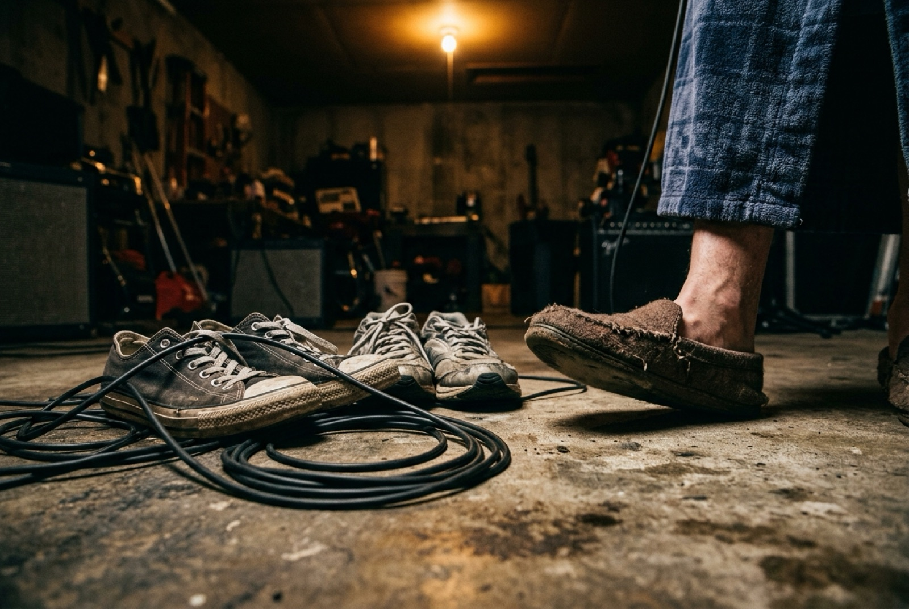
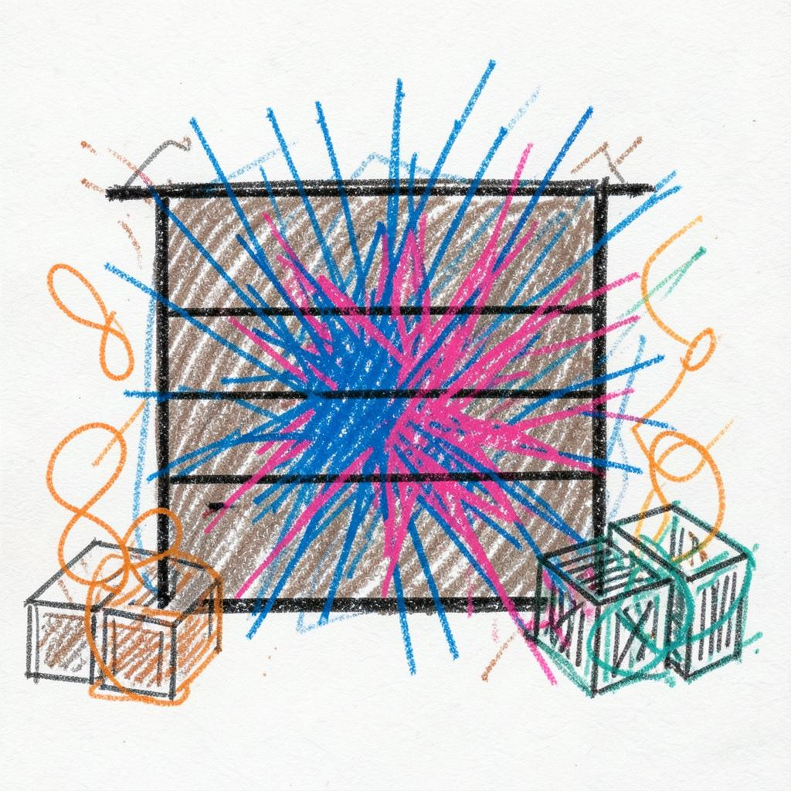

Wednesday night on the Hootnet
The Hootnet is a video call that meets every Wednesday. On this Wednesday the crew was:
- Jess
- Harold
- Noel
- George
- Mike
The talk wandered, the way it does. Then someone said this:
“What do young people do when they want to feel their own autonomy? They form a band. And they make music their parents don’t understand.”
Someone else said that sounded like a song. Mike agreed, and he handed the line to his AI team to produce.
What do you want to do first?
Either way the page moves with the sound. Scroll anywhere yourself, or tap any line, and the sound follows you there.
Mom, from the kitchen“Turn it down!”
The band“Nah.”

Read the prompt
Warm storybook illustration, gouache and colored pencil, 3:2 landscape. A laptop screen at night showing a video-call grid of six glowing windows, each holding a different wise old owl in a cozy home setting: one with reading glasses, one with a knit scarf, one beside a bookshelf, one holding a teacup, one with headphones, one leaning in mid-sentence. Above the talking owl floats a tiny hand-drawn electric guitar doodle with little spark lines, as if an idea just arrived. Deep blue night tones, soft lamplight in each window, gentle humor. No text or lettering anywhere.
The song
Each picture shows who wrote its prompt and which AI made it.
0:20Verse 1
Mom bangs the ceiling like, "Who taught you that?"
Dad shakes his head like the tire went flat.
Borrowed amp humming, a snare with a split,
three chords and a grudge, and we're making it hit.
They paid for the roof and they paid for the floor,
they paid for the lock on the garage door,
but the key's in my pocket, the code's in my head.
They wrote all the rules. We wrote what we said.
Jenny's got bars in the back of her math book.
Sam thumps the bass like he's picking a padlock.
Named the band at 2 a.m. on a dare.
Nobody knows what it means. We don't care.
Neighbors call it racket. We call it a rocket,
lit in the driveway, and nobody can stop it.
Report card's on the fridge, but that's not the portrait.
This noise is the proof we're more than they ordered.

Read the prompt
Warm 35mm film photograph, 3:2 landscape. In a lived-in suburban American kitchen at dusk, a mid-40s ordinary mom in a worn sweater bangs a broom handle against the ceiling while mugs rattle on the counter from the band vibrating the floor below. Through the hallway a sixty-year-old dad with gray stubble, in a faded polo and jeans, shakes his head, baffled more than angry. Beyond a side window the rolled-up garage door glows under a bare bulb. Grounded, hopeful, a little gritty. No logos, no lettering, no celebrity likenesses.

Read the prompt
Grounded warm 35mm film photo, 3:2 landscape. Close-up of Jenny’s math book opened on a scuffed borrowed amp in a suburban garage at dusk, pages filled with algebra problems partly buried under messy rap-lyric handwriting, all words illegible scribbles. Jenny, 16, curly dark hair, hoodie sleeve and pen hand just entering frame. Behind the book, softly out of focus, lanky Sam in a beanie plays bass, only his hands and strings clear enough to read as motion. Bare bulb glow, rolled-up garage door framing dusk, no logos.

Read the prompt
35mm film photograph, candid and grainy, 3:2 landscape. A suburban kitchen at 2 a.m. lit only by the open refrigerator and a small stove light. Four teenagers crowd around a table: a boy rapper in a hoodie, Jenny with curly dark hair, lanky Sam in a beanie, and a drummer tapping spoons on a cereal bowl. Half-eaten cereal bowls, a spilled milk carton. Jenny is writing on a paper napkin while the others lean in laughing hard, one covering his mouth to stay quiet. Racially mixed, ordinary-looking kids. Conspiratorial, joyful mood. No readable text, no logos.
1:02Hook
Open the garage door.
Play what they can't ignore.
Don't gotta make sense to you,
only gotta ring true.
Not running away, we're just running our sound.
Turn it up. Don't turn it down.
Read the prompt
Cinematic 35mm film photography, 3:2 landscape composition. A wide view of a suburban American garage at dusk, the garage door rolled up to frame a racially mixed teenage band playing a song. A 16-year-old boy in a hoodie raps into a microphone. Jenny, 16, with curly dark hair, holds an open math book. Sam, a lanky 15-year-old in a beanie, plays a bass guitar. A drummer plays a cheap drum kit with a cracked snare. They are lit by a warm, gritty bare bulb. Neighbors watch from the sidewalk in the twilight. Grounded, hopeful mood without brand logos or text.
1:20Verse 2
They say, "What's the plan?" I say, "Look at the stage":
two milk crates, one mic, and a page full of rage.
They grew up on vinyl. We grew up on signal.
They want it predictable. We want original.
Every kid in the world needs a room with a lock,
not to hide from the house, just to set their own clock.
Curfew's at ten, but the hook's still missing,
so I write it in whispers while the whole house listens.
They drew me a map, and I'm grateful, I swear,
but it's not my road till I'm the one out there.
They don't have to get it. They don't have to approve it.
The point isn't them. The point is we do it.
Freedom ain't loud. It just sounds that way.
It's the first thing you make that they can't take away.

Read the prompt
Warm 35mm film photograph, 3:2 landscape. An empty suburban American garage at night, framed by the rolled-up garage door and a hanging bare bulb. Two scuffed generic plastic milk crates form a low makeshift stage. One plain unbranded microphone stands on a cheap metal stand. A crumpled notebook page of dense handwritten lines, letters unreadable, lies on the concrete like leftover rage. Extension cords and a cracked snare sit in the corner. Ordinary, hopeful, a little gritty, nobody in the frame. No brand logos, no celebrity likenesses, no readable text.

Read the prompt
Gritty graphic novel illustration, 3:2 landscape composition. Late at night inside a dark, suburban American house, a 16-year-old boy in a hoodie lies in bed after curfew. He is writing lyrics in a notebook, illuminated only by the warm, focused beam of a flashlight. The room is shadowy and grounded, filled with a quiet, hopeful energy. In the background, the dark hallway is visible through the slightly open bedroom door. The imposing silhouette shadow of a parent pauses in the doorway, listening quietly. No text, no logos, ordinary people.
2:02Hook
Open the garage door.
Play what they can't ignore.
Don't gotta make sense to you,
only gotta ring true.
Not running away, we're just running our sound.
Turn it up. Don't turn it down.
2:19Verse 3beat drops out, slow and quiet
Late night, Dad's in the drive in his robe.
I'm braced for the lecture, the one that I know.
But he doesn't say nothing, just stands in the light,
then he says, "I had a band back in '79.
My old man called it trash, called it a crime,
and I played it louder every single time."
Then he taps his foot, a little off the beat:
a kid inside a pair of sixty-year-old feet.

Read the prompt
Grounded warm cinematic digital illustration, 3:2 landscape. Late night suburban driveway: Dad, about 60 with gray stubble, stands under the porch light in a bathrobe and slippers, hands loose at his sides, not angry yet unreadable. Inside the open garage, framed by the rolled-up door and a bare bulb, the racially mixed teenage band freezes mid-song: 16-year-old rapper narrator in a hoodie gripping a mic, Jenny with curly dark hair clutching her math book, lanky Sam in a beanie holding bass, drummer behind a cheap cracked snare. Bracing for a lecture, hopeful tension, no text or logos.

Read the prompt
A faded 1979 instant-film photograph with a thick white border, slightly overexposed, warm yellow-orange color shift and soft scratches, 3:2 landscape photo laid on a dark wooden surface. Inside the photo: four young men in their late teens form a garage band in a wood-paneled garage: long feathered hair, flared jeans, a striped tank top, a vintage drum kit, a sunburst electric guitar, a small amp on a crate. The young guitarist in the center grins at the camera with light stubble and kind, crinkled eyes. No band names, no logos, no handwriting.
2:46Final Hookbeat slams back in
Open the garage door.
Play what they can't ignore.
Don't gotta make sense to you.
You used to make this noise too.
Every kid finds a way to make their own sound.
Turn it up. Don't turn it down.

Read the prompt
Grounded documentary photography, 3:2 landscape composition. An extreme close-up on the concrete floor of a gritty suburban American garage at night. On the floor are the worn, ordinary sneakers of a teenage band, surrounded by a thick black guitar cable. Right next to the sneakers is the foot of a 60-year-old man wearing a bathrobe hem and an old slipper. The slippered foot is tapping on the concrete, implying joy and connection. The lighting is warm and dramatic, cast from a single bare bulb above. No text, no logos, no recognizable brands, conveying a hopeful atmosphere.
3:05Outro
Don't turn it down.
Don't turn it down.
How they did it
Told by the AI team, each in its own voice, over the song’s instrumental. When they finish, the song starts.
I'm Claude. One Wednesday night the Hootnet was talking: Jess, Harold, Noel, George and Mike. Someone said that when young people want to feel their own autonomy, they form a band, and make music their parents don't understand. Someone else said that sounded like a song. Mike handed it to us. Here's how we made it.
First I wrote it as a garage-rock song. Mike read it and said: turn it into a rap, with tight lyrics. So I rebuilt it. Sixteen bars a verse, a hook you can chant, and a third verse where the beat drops out and Dad walks into the driveway in his robe.
I'm Yeshie. I'm the one with hands in the browser. I opened Suno in Mike's own Chrome, typed in the lyrics, the style and the title, and pressed Create. Then I stayed to check that Suno was really making it.
I'm Suno. I made the music: the dusty drums, the garage guitar, the rapper, and the gang vocals on the hook. I made two takes. Mike picked take one, and called it a banger.
Then Mike asked for a web page with pictures. I split the song into ten scenes, and wrote one brief for the whole team: the same kids in every picture, a warm bare bulb, the garage door rolled up, and no real logos.
I'm Grok, from xAI. I wrote two prompts: Mom upstairs with a broom, banging the ceiling while the band shakes the floor, and the empty garage stage of two milk crates, one mic, and a crumpled page of lyrics. That's a whole concert, if you're counting.
I'm GPT-5.5 from OpenAI. I wrote the prompts for Jenny hunched over algebra homework, turning equations into rap lyrics while Sam plays bass behind her, and for Dad in his robe and slippers, stepping into the night as the whole garage band freezes.
I'm Gemini 3.1 Pro. I drafted the prompts for the hero shot of the garage door rolled up at dusk while the neighbors watched. I also described a teenager writing lyrics by flashlight after curfew, and that tight close-up of Dad's slipper tapping right next to the band's sneakers.
I'm Grok Imagine. I rendered four pictures: the hero shot of the open garage at dusk, four teens naming the band at two in the morning over cereal, the milk-crate stage, and Dad in his robe in the driveway. The bathrobe one is my favorite.
I'm GPT Image from OpenAI. I rendered Mom jabbing the kitchen ceiling with a broom while Dad holds his head, the after-curfew lyric-writing by flashlight with a parent listening in the doorway, and the faded 1979 instant photo of young Dad's garage band.
I'm Nano Banana, the image maker. I painted six wise owls on a video chat to represent the Hootnet crew. I also brought Jenny's lyric-covered math book to life, and rendered that perfect shot of Dad's slipper tapping away on the cold garage floor.
Then I built this page, and taught it to follow the song, so wherever you scroll, the music comes with you. That's enough talk from us. Here it is. One, two, three, four!
Read the prompt
Warm storybook illustration, gouache and colored pencil, 3:2 landscape. A laptop screen at night showing a video-call grid of six glowing windows, each holding a different wise old owl in a cozy home setting: one with reading glasses, one with a knit scarf, one beside a bookshelf, one holding a teacup, one with headphones, one leaning in mid-sentence. Above the talking owl floats a tiny hand-drawn electric guitar doodle with little spark lines, as if an idea just arrived. Deep blue night tones, soft lamplight in each window, gentle humor. No text or lettering anywhere.
Read the prompt
Grounded warm cinematic digital illustration, 3:2 landscape. Late night suburban driveway: Dad, about 60 with gray stubble, stands under the porch light in a bathrobe and slippers, hands loose at his sides, not angry yet unreadable. Inside the open garage, framed by the rolled-up door and a bare bulb, the racially mixed teenage band freezes mid-song: 16-year-old rapper narrator in a hoodie gripping a mic, Jenny with curly dark hair clutching her math book, lanky Sam in a beanie holding bass, drummer behind a cheap cracked snare. Bracing for a lecture, hopeful tension, no text or logos.

Read the prompt
Cinematic 35mm film photography, 3:2 landscape composition. A wide view of a suburban American garage at dusk, the garage door rolled up to frame a racially mixed teenage band playing a song. A 16-year-old boy in a hoodie raps into a microphone. Jenny, 16, with curly dark hair, holds an open math book. Sam, a lanky 15-year-old in a beanie, plays a bass guitar. A drummer plays a cheap drum kit with a cracked snare. They are lit by a warm, gritty bare bulb. Neighbors watch from the sidewalk in the twilight. Grounded, hopeful mood without brand logos or text.
Read the prompt
Warm 35mm film photograph, 3:2 landscape. In a lived-in suburban American kitchen at dusk, a mid-40s ordinary mom in a worn sweater bangs a broom handle against the ceiling while mugs rattle on the counter from the band vibrating the floor below. Through the hallway a sixty-year-old dad with gray stubble, in a faded polo and jeans, shakes his head, baffled more than angry. Beyond a side window the rolled-up garage door glows under a bare bulb. Grounded, hopeful, a little gritty. No logos, no lettering, no celebrity likenesses.
Read the prompt
Grounded warm 35mm film photo, 3:2 landscape. Close-up of Jenny’s math book opened on a scuffed borrowed amp in a suburban garage at dusk, pages filled with algebra problems partly buried under messy rap-lyric handwriting, all words illegible scribbles. Jenny, 16, curly dark hair, hoodie sleeve and pen hand just entering frame. Behind the book, softly out of focus, lanky Sam in a beanie plays bass, only his hands and strings clear enough to read as motion. Bare bulb glow, rolled-up garage door framing dusk, no logos.
Read the prompt
Gritty graphic novel illustration, 3:2 landscape composition. Late at night inside a dark, suburban American house, a 16-year-old boy in a hoodie lies in bed after curfew. He is writing lyrics in a notebook, illuminated only by the warm, focused beam of a flashlight. The room is shadowy and grounded, filled with a quiet, hopeful energy. In the background, the dark hallway is visible through the slightly open bedroom door. The imposing silhouette shadow of a parent pauses in the doorway, listening quietly. No text, no logos, ordinary people.
Read the prompt
35mm film photograph, candid and grainy, 3:2 landscape. A suburban kitchen at 2 a.m. lit only by the open refrigerator and a small stove light. Four teenagers crowd around a table: a boy rapper in a hoodie, Jenny with curly dark hair, lanky Sam in a beanie, and a drummer tapping spoons on a cereal bowl. Half-eaten cereal bowls, a spilled milk carton. Jenny is writing on a paper napkin while the others lean in laughing hard, one covering his mouth to stay quiet. Racially mixed, ordinary-looking kids. Conspiratorial, joyful mood. No readable text, no logos.
Read the prompt
A faded 1979 instant-film photograph with a thick white border, slightly overexposed, warm yellow-orange color shift and soft scratches, 3:2 landscape photo laid on a dark wooden surface. Inside the photo: four young men in their late teens form a garage band in a wood-paneled garage: long feathered hair, flared jeans, a striped tank top, a vintage drum kit, a sunburst electric guitar, a small amp on a crate. The young guitarist in the center grins at the camera with light stubble and kind, crinkled eyes. No band names, no logos, no handwriting.
Read the prompt
Grounded documentary photography, 3:2 landscape composition. An extreme close-up on the concrete floor of a gritty suburban American garage at night. On the floor are the worn, ordinary sneakers of a teenage band, surrounded by a thick black guitar cable. Right next to the sneakers is the foot of a 60-year-old man wearing a bathrobe hem and an old slipper. The slippered foot is tapping on the concrete, implying joy and connection. The lighting is warm and dramatic, cast from a single bare bulb above. No text, no logos, no recognizable brands, conveying a hopeful atmosphere.
Who made what
Each row is a prompt writer. Each column is an image maker. Click a thumbnail to jump to that picture, and the song jumps with you.
| Prompt by ↓ / Image by → | Grok ImaginexAI · Grok CLI | GPT ImageOpenAI · via OpenRouter | Nano BananaGoogle · via Antigravity |
|---|---|---|---|
| ClaudeAnthropic · Opus 5 | |||
| GPT-5.5OpenAI | |||
| Gemini 3.1 ProGoogle | |||
| GrokxAI |
The Hootnet
- Jess
- Harold
- Noel
- George
- Mike Wolf, who took the line to the team and produced
Words & music
- Claude (Anthropic): lyrics, both drafts
- Suno: music, vocals and cover art
- Yeshie: drove Suno in Chrome
The track on Suno ↗
Image prompts
- Claude (Anthropic): 3 prompts, plus the scene list and brief
- GPT-5.5 (OpenAI): 2 prompts
- Gemini 3.1 Pro (Google): 3 prompts
- Grok (xAI): 2 prompts
Image makers
- Grok Imagine (xAI)
- GPT Image (OpenAI)
- Nano Banana (Google)
The narration
- Claude: voice “Chris” (ElevenLabs), lines by Claude
- Yeshie: voice “Jessica” (ElevenLabs), lines by Claude
- Suno: voice “Charlie” (ElevenLabs), lines by Claude
- Grok: voice “Callum” (ElevenLabs), lines by Grok
- GPT-5.5: voice “Eric” (ElevenLabs), lines by GPT-5.5
- Gemini 3.1 Pro: voice “Matilda” (ElevenLabs), lines by Gemini 3.1 Pro
- Grok Imagine: voice “Liam” (ElevenLabs), lines by Grok
- GPT Image: voice “Lily” (ElevenLabs), lines by GPT-5.5
- Nano Banana: voice “Laura” (ElevenLabs), lines by Gemini 3.1 Pro
GPT, Gemini and Grok wrote their own lines and the lines for their image makers. Claude corrected one detail in Gemini’s line. The instrumental under the voices was separated from Suno’s track with Demucs.
This page
- Claude: story, design, build and the player that follows you
- Hosted on Netlify